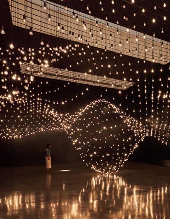

Trayectoria y proyección internacional
Nacio en México y con formación en química física, Lozano-Hemmer desarrolló una carrera artística orientada al uso crítico de la tecnología.
Su enfoque interdisciplinario le permitió integrar conocimientos cientifícos en la cración de obras complejas y conceptuales.
A lo largo de su trayectoria, ha presentado instaleciones en espacios públicos, museos y bienales insternacionales.
Su proyectos a gran escala ha intervenido edificios, plazas y paisajes urbanos, convirtiendo el espacio público en un escenario de interacción colectiva.
El espectador como protagonista
En la obra de Rafael Lozano-Hemmer, el espectador ocupa un rol central.
Las piezas están diseñadas para activarse únicamente a través de la participación, lo que transforma la experiencia artística en un proceso compartido.
Esta participación redefine la relación tradicional entre obra y público.

Espacio público y experiencia colectiva
Muchas de sus intalaciones se desarrollan en espacios urbanos, lo que permite ampliar el alcance del arte más allá de los ámbito tradicionales.
Estas intervenciones transforman el paisaje cotidiano en un entorno de experimentación.
El carácter colectivo de estas obras genera experiencias compartidas entre desconocidos, promoviendo nuevas forma de interacción social.
El espacio público se convierte así en un lugar de encuentro donde arte, tecnología y comunidad se entrelazan.
Sistema de control de luces móviles
Ingresá la cantidad de obras que querés registrar. Después va a completar los datos de cada obra.